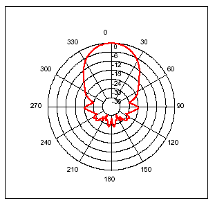
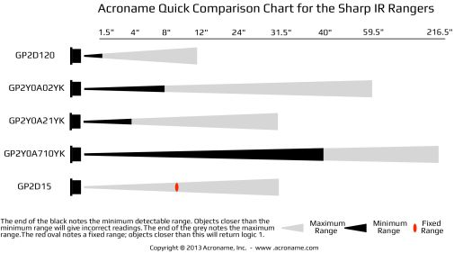
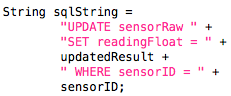

Testing Hardware
Testing hardware is very different from testing software. When testing hardware, the results may vary from device to device, while on software it should always act the same. The hardware tests we will have to do for our product can be split into two sections; Sensor accuracy and data transmission.
Sensor Accuracy
To improve the quality of our readings, it is important that we test our sensors exhaustively. Some documentation already exists for certain sensors in terms of accuracy of sensors at different ranges. In the prototype we used an SRF-05 Ultra-Sonic Ranger. Under its technical specifications, the following diagram was provided:

The diagram is of the ultra sound beam pattern created by the device. As seen the device reads mostly what is straight in front of it, however it can accidentally pick up a reading of something slightly next to it. What we need to test here is how far to the sides that is, as it could give us a false reading of the location of the car.
Similar tests must be done for infrared sensors. Infrared sensors have a determined range for where accuracy is considered reliable. Below is a diagram of different kinds of infra red sensors and their maximum and minimum ranges:

What we need to do in terms of testing with infrared is to determine the ride height of cars From there, we can choose the right kind of sensors who's minimum and maximum ranges fit that of the minimum and maximum ride heights of cars.
Light sensors (or photodiodes) require some pretty advanced testing to ensure accurate results. Since the implementation of this kind of sensor requires an advanced algorithm to determine the difference between a car being parked or not, the algorithm needs to be tested to ensure that it can correctly tell if a car is parked in a bay or not. It needs to be able to detect changes in the environment and readjust its definition of a car being parked. Long periods of continuous readings will be necessary where cars will enter and leave the bay at random times during the day.
A similar type of testing is required for the webcamera sensor. Again changes in the environment needs to be taken into consideration in the creation of the algorithm.
Data transmission
To ensure that our data is being transmitted correctly, we need to do stress tests on the system. By sending different sized packages of information through our BlueTooth, ZigBee or WiFi transmitters, we can determine the capacity of our system. If we already know the speed of transmission possible for our transmitters, we can simulate different sized networks to see what is possible and what is the most efficient. One way to do this is to use Contiki OS, which is a version of the OS Ubuntu Linux. This OS can be used to simulate sensor networks and set up our own.
Testing Software
Unit Testing
Unit Tests are tests testing sections of source code individually. A complete set of Unit tests will test every testable part of the final code in its smallest possible form. This will usually be testing a method or a class at once to see if it always return the expected result. Returning a pass on these tests is a way of proving that our test is robust and works 99% of the time.
JUnit Testing
JUnit tests are a type of Unit tests written in Java to test Java code. Since most of our code will in the end be Java, we will be using this method of testing a lot. One of the things we will have to test is our database uploading code. Currently we have a java project that will read the data coming through a COM port (in this case ultrasound readings) and upload it to an online database. To test that this code works every time, we will have to write multiple JUnit tests.
One of these tests will be to see if the code correctly fetches the data from the correct COM port. One way to do this is by sending a specific string through the COM that we know the value of. The JUnit test would test to see if the value read by the java class is the same as the expected string. We can chose to run this test a set number of times and see if it succeeds every time.
another part of the code that we need to test is if the database receives the correct SQL Query. One way to test this is by again comparing an example string to the SQLString that we use to upload to the database.
The above code is the sql query we send to our database to upload the value 'Updated Result' to the specific sensor: 'sensorID'. If we set these two values to some test values and compare the two strings, we can tell if the database update we are sending is correct. Again we can iterate this test a set amount of times to make sure the correct value is read every time.